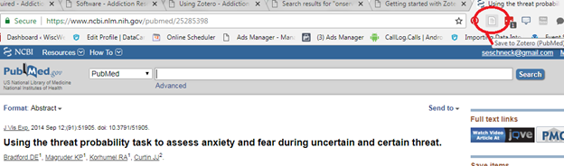
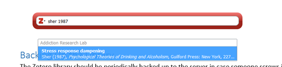
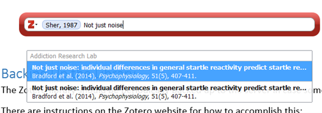

17 Zotero
17.1 Installation
There are two parts of installing Zotero. Go to https://www.zotero.org/download/ and install both the standalone, and the browser connector.
17.2 Registration & Synchronization
You’ll receive an invite to the lab Zotero group; if you already have a Zotero account, provide this to Susan to link to your invite.
To get the lab library into your new standalone installation, go to Preferences, and put your username or email and zotero password in where indicated. The first time you sync, it might take a few hours to load the library to your computer, so run this procedure at the end of the work day.
17.3 Adding References
Before adding a reference, PLEASE search Zotero and make sure it’s not a duplicate!
We usually add references to a specific project or manuscript folder that John creates. You can find these under “Addiction Research Lab” under “Group Libraries” and highlight one that you wish to add refs to. You can also add references to the general lab library, or you can create your own personal folders under your own account (i.e. for research or classes)
17.3.1 Adding a Reference Using Web Browser Plug-in
This is the preferred method of adding references since most websites with articles/chapters provide complete embedded metadata.
Open your standalone Zotoro (the browser connector won’t work unless it’s open) and select the project or manuscript folder you wish to add the ref to.
Go to the webpage where the article you would like to save is located
Look up at the browser URL box and click the page icon on the right
/
Check the Zotero desktop application to confirm the reference has been saved to the desired folder in the “Addiction Research Lab” library
If multiple references are available on the same page, a browser connector dialogue box will open allowing you to select which of them you want to save. Useful for saving lots of references out of a page of search results!
17.3.2 Manually Entering a Reference
When using the Zotero standalone application, click the “New Item” button (green circle with the white plus sign on the top toolbar)
Select which type of reference you’re adding (book, journal article, etc.)
The new item will appear in the library and in the column on the right side
Enter ALL available information into the appropriate fields
17.3.3 Formatting
Addiction Research Lab format for entering authors names in Zotero is: Full Last name, Full First name and Middle initial (without period)
IMPORTANT FINAL STEP: SYNC THE LIBRARY
After adding a new reference, click the green circular arrow located on the right side of the top tool bar in the desktop application The library is syncing when the arrow is spinning; do not close the desktop application until the arrow has stopped spinning Your local Zotero should now be synced with the Zotero Server so that all members will be able to access the new reference(s)
17.4 Managing PDFs of References
John may want references for specific manuscripts of publications saved to a certain location. If not, you save them to the generic location on the lab server:
Save the .pdf file to the lab sever using the path
P:\Lit\Articles. Note we have A-L and M-Z for author last names (because these files are so large).Save the file using the following naming format: Last name, First Initial, Year, a, b, c, d, etc. The letters at the end of the file name are an identifier used in the lab, which indicate the first, second, third, etc. article we have saved from that author and that publication year. Example: CurtinJ2011a for the first ref saved with that publication year; CurtinJ2011b for the second, etc.
17.5 Using Zotero in Writing
17.5.1 In Quarto
As of 2022, most manuscripts in our lab will be written in Quarto since it allows inline code for reproducible results. See this section for info on adding bibliographies and citations (including linked Quartro resources for further reading)
17.5.2 In MS Word
Insert an inline citation
Make sure Zotero is running.
In your word document, put your cursor where you want the reference to appear, then click the Zotero menu tab.
Hit Add/Edit citation. A preferences window will come up. You can leave all of the defaults as is and just hit Okay.
a. Changing Citation Style will change how your citations and bibliography appear – as numbered superscripts (ie Nature) vs (Author, Year) (ie APA 6th ed), etc.
4. A red Zotero search bar will come up and you will see a field marker {Citation} appear in your document. You can now search by author/year,or by title. You don’t have to hit enter, it starts searching as soon as you type.
/
A selection box will come up. Click the desired article (or hit enter if it’s already selected) and the name/year will turn into a blue oval in the Zotero search box. You can then start typing a new search if you want another citation in the same location:
/
When you are done adding citations and all are in blue ovals, hit enter in the Zotero search box. A green progress bar will fill the Zotero search box. When it closes your {Citation} marker will be replaced by the citations in your chosen style.
Generate a Bibliography
- Make sure Zotero is running.
- Type “Bibliography” where you want it to appear. NOTE if this word appears in multiple places in your document, Zotero might put it in the wrong place!
- On the Zotero menu tab click Add/Edit Bibliography.
- A window will open for you to add/remove citations. No need to change anything, just hit Okay.
- It takes a little time for it to appear so be patient.
Changing Citation/Bibliography Formats
On the Zotero menu tab, hit Document Preferences. A preferences window will come up.
Changing “Citation Style” will change how your citations and bibliography appear – as numbered superscripts2 (ie Nature) vs (Author, Year) (ie APA 6th ed) vs bracketed citations [3] (IEEE), etc.
17.6 Zotero Tips
17.6.1 Citation/bibliography style templates
Use this online tool to find a template for Zotero that matches your target journal: http://editor.citationstyles.org/searchByExample/
17.6.2 Reordering multi-citations
Click on a place where you have multiple citations together and click Add/Edit citation. You can then drag the blue ovals around inside the Zotero search bar to change the order they are cited.
17.6.3 Saving multiple citations in Pubmed
If you have a page of Pubmed search results up, you can click several articles that you want Zotero to save before hitting the “Save to Zotero” button. The dialogue box that comes up will helpfully have these same references checked for you automatically!
17.6.4 Where to save citations from
The best webpage to save from is always Pubmed, as it is perfectly formatted to give Zotero all the necessary metadata. Some webpages (like Cochrane Library) are also perfectly formatted. Others are not, and Zotero will save the reference as a webpage rather than a journal article. You can tell this will happen because hovering over the Zotero button says “Save to Zotero (Web Page with Snapshot)”. So make sure it doesn’t say this when you try to save! Also, you can open PDFs directly in Chrome and use the button to try to add it, but Zotero may or may not correctly pull the metadata out into the reference. If not, you will see a PDF in your Zotero with no author/title. Right-click and hit “Retrieve Metadata for PDFs” and that should fix it. If not you’ll have to get it automatically.
Most PDFs helpfully have a DOI (text or link) inside them which links you back to the original page (Pubmed or Journal) for the article. This is also an excellent way to get to a good place to use the Zotero Chrome plugin, as most of these DOI sources are perfectly formatted to work with Zotero.
17.6.5 Troubleshooting Citations
showing first names sometimes This happens when an author has multiple variations in spelling/abbreviation of first & middle names. Correction procedure:
In Zotero, search by author.
Go down the list of resultant citations and correct all author spellings to exact same format. Easiest way to do this is to backspace once in the last name, then click the desired suggestion that comes up when you retype the last letter of their last name. a. Note that this re-orders the results and you may need to check all of them several times to make sure you corrected all of them.
Sync Zotero.
In your word document, hit Refresh under Zotero menu item. Then, !important, in document preferences, change the citation style 2x (from whatever you currently use, to something else, then back to what you want).
17.6.6 Empty local library
If you open Zotero and get the message “you are about to sync to an empty local library” there may be a database error which can happen when Zotero is shut down unexpectedly (ie, if the computer reboots itself).
Hit Edit -> Preferences -> Files and Folders -> Show Data Directory. A file explorer window will open.
Close Zotero while keeping that file explorer window open.
You will see several files whose names start with Zotero.squlite. If you see Zotero.sqlite and it’s very small (ie under 1000KB) it means it’s empty. (If it’s very large something else is wrong and you should stop). You should also see a file named Zotero.sqlite.1.bak which is very large (around 200KB).
Rename Zotero.sqlite to Zotero.sqlite.empty.
Copy and paste Zotero.sqlite.1.bak and then rename it Zotero.sqlite
Reopen Zotero – database is fixed!
17.6.7 Backing Up the Library
The Zotero library should be periodically backed up to the server in case someone screws it up. There are instructions on the Zotero website for how to accomplish this: http://libguides.northwestern.edu/content.php?pid=68444&sid=676064. The Zotero backup data folder is saved on our server in P:\Lit\Zotero.